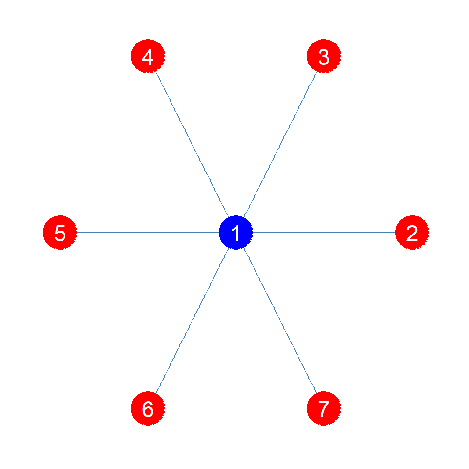
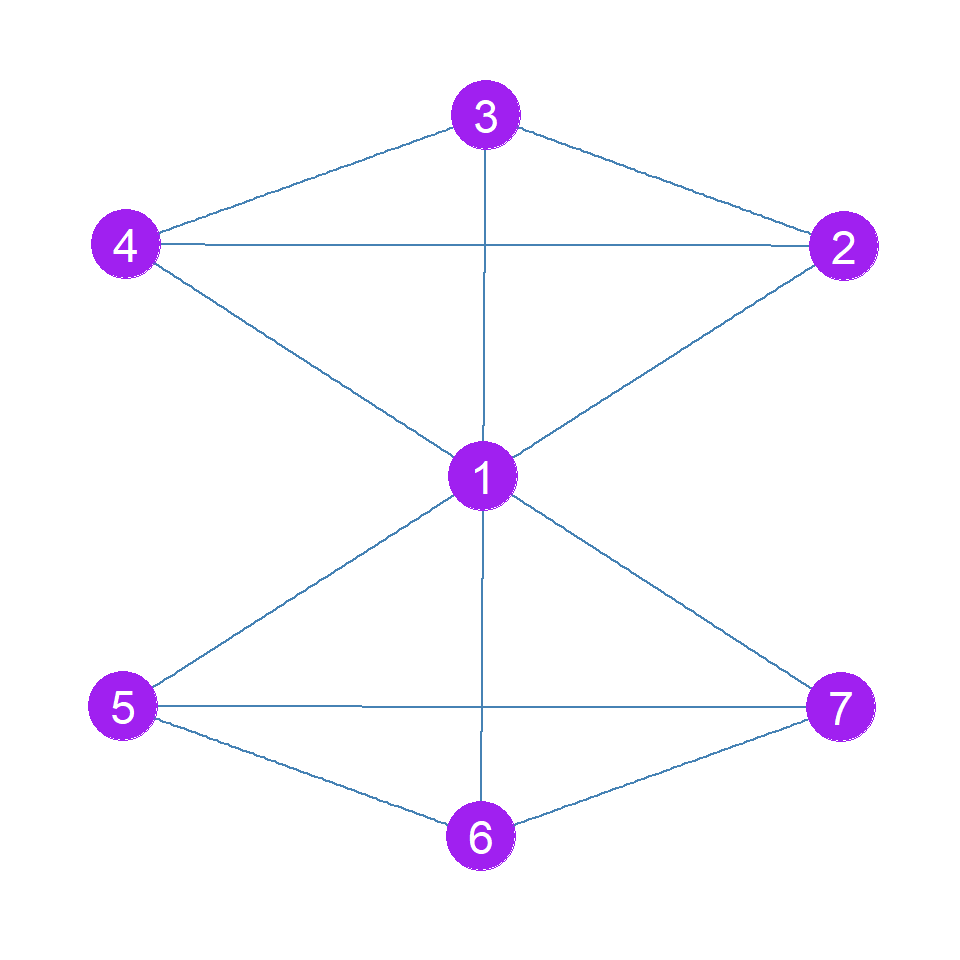
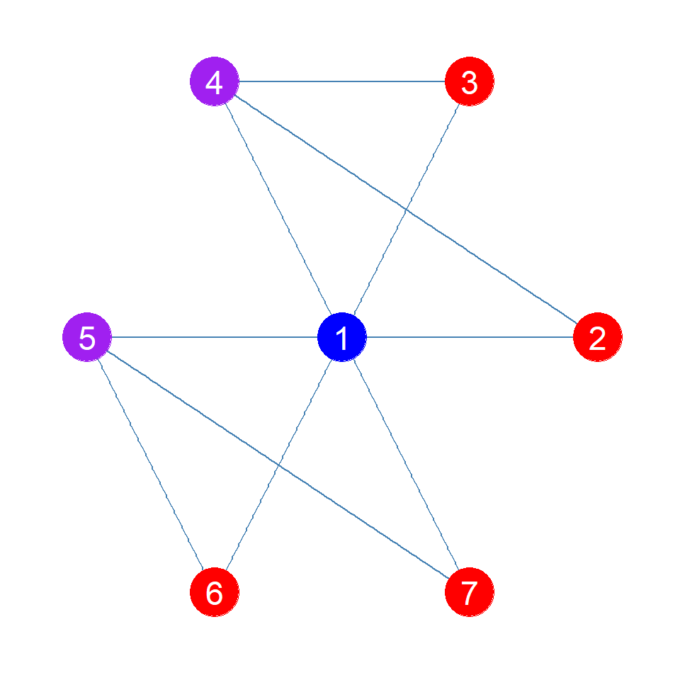
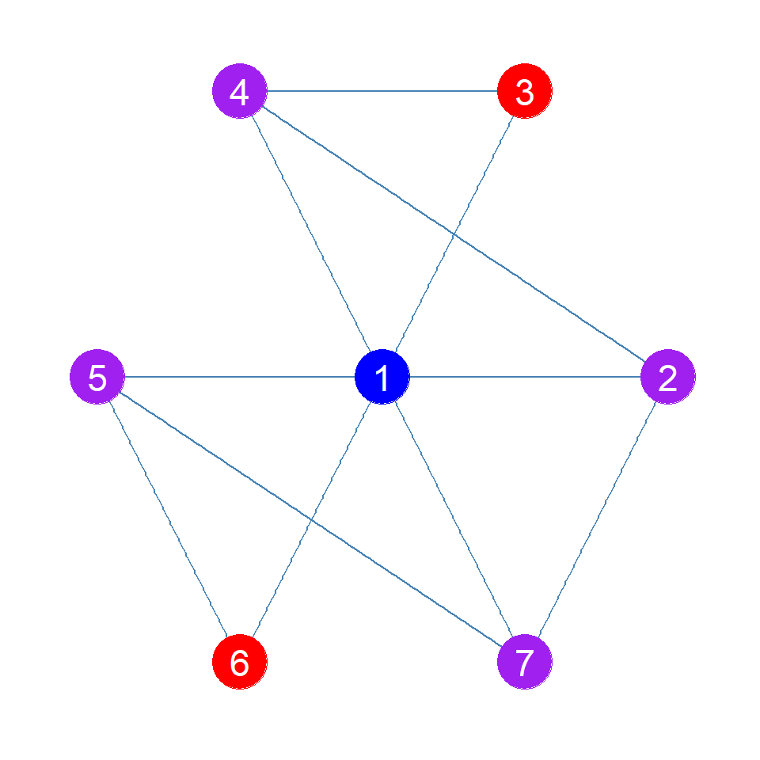
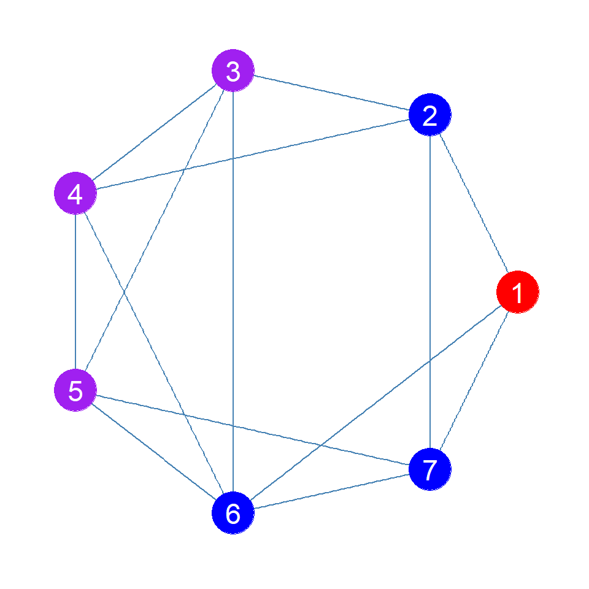
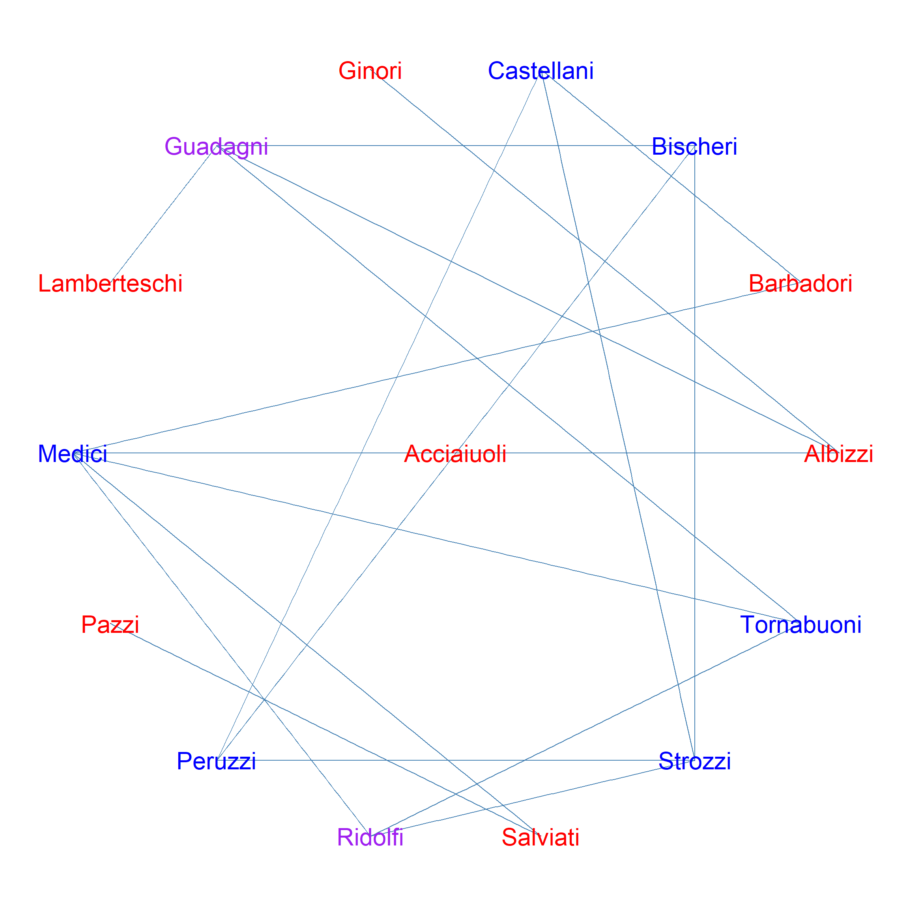

Jilbert’s Distinction Centrality
According to Jilbert (2024), the Distinction Centrality of a node is a function of the status of each focal node and the degree of status independence of its alters.
It is given by:
\[ D_i = S_i(G) + \frac{\sum_{j \in N(i)} S_j(G - i)}{N} \]
Where \(S_i(G)\) is the (normalized to have maximum 1.0) eigenvector centrality of node \(i\) computed in the full graph \(G\), \(N(i)\) is the set of \(i\)’s neighbors, and \(S_j(G -i)\) is the eigenvector centrality of node \(j\) in the node deleted subgraph of \(G\) that excludes \(i\). The Distinction of a node thus increases with its own status and decreases to the extent that others would gain status if that node was not around.
g1 <- make_star(7, mode = "undirected") # star graph
g2 <- g1 + edge(2,3)
g2 <- g2 + edge(2,4)
g2 <- g2 + edge(3,4)
g2 <- g2 + edge(5,6)
g2 <- g2 + edge(5,7)
g2 <- g2 + edge(6,7) # structural fold
g3 <- g1 + edge(2,4)
g3 <- g3 + edge(3,4)
g3 <- g3 + edge(5,6)
g3 <- g3 + edge(5,7) # intra-connected clusters
g4 <- g3 + edge(2,7) # inter-connected clusters
| Node | Distinction | Status | Constraint |
|---|---|---|---|
| 1 | 1.00 | 1.00 | 0 |
| 2 | -0.59 | 0.41 | 1 |
| 3 | -0.59 | 0.41 | 1 |
| 4 | -0.59 | 0.41 | 1 |
| 5 | -0.59 | 0.41 | 1 |
| 6 | -0.59 | 0.41 | 1 |
| 7 | -0.59 | 0.41 | 1 |

| Node | Distinction | Status | Constraint |
|---|---|---|---|
| 1 | 0.00 | 1.00 | 1.00 |
| 2 | -0.02 | 0.61 | 0.63 |
| 3 | -0.02 | 0.61 | 0.63 |
| 4 | -0.02 | 0.61 | 0.63 |
| 5 | -0.02 | 0.61 | 0.63 |
| 6 | -0.02 | 0.61 | 0.63 |
| 7 | -0.02 | 0.61 | 0.63 |
| Node | Distinction | Status | Constraint |
|---|---|---|---|
| 1 | 0.20 | 1.00 | 0.80 |
| 2 | -0.26 | 0.50 | 0.76 |
| 3 | -0.26 | 0.50 | 0.76 |
| 4 | 0.05 | 0.62 | 0.57 |
| 5 | 0.05 | 0.62 | 0.57 |
| 6 | -0.26 | 0.50 | 0.76 |
| 7 | -0.26 | 0.50 | 0.76 |

| Node | Distinction | Status | Constraint |
|---|---|---|---|
| 1 | 0.25 | 1.00 | 0.75 |
| 2 | -0.05 | 0.65 | 0.70 |
| 3 | -0.30 | 0.47 | 0.76 |
| 4 | -0.03 | 0.61 | 0.64 |
| 5 | -0.03 | 0.61 | 0.64 |
| 6 | -0.30 | 0.47 | 0.76 |
| 7 | -0.05 | 0.65 | 0.70 |

| Node | Distinction | Status | Constraint |
|---|---|---|---|
| 1 | 0.21 | 1 | 0.79 |
| 2 | 0.21 | 1 | 0.79 |
| 3 | 0.21 | 1 | 0.79 |
| 4 | 0.21 | 1 | 0.79 |
| 5 | 0.21 | 1 | 0.79 |
| 6 | 0.21 | 1 | 0.79 |
| 7 | 0.21 | 1 | 0.79 |

| Node | Distinction | Status | Constraint |
|---|---|---|---|
| 1 | 0.50 | 0.95 | 0.45 |
| 2 | 0.38 | 0.71 | 0.34 |
| 3 | 0.45 | 0.85 | 0.40 |
| 4 | 0.12 | 0.57 | 0.45 |
| 5 | -0.20 | 0.20 | 0.40 |
| 6 | -0.09 | 0.21 | 0.31 |
| 7 | -0.09 | 0.21 | 0.31 |
| 8 | -0.15 | 0.46 | 0.61 |
| 9 | -0.19 | 0.61 | 0.80 |
| 10 | -0.64 | 0.27 | 0.92 |
| 11 | -0.20 | 0.20 | 0.40 |
| 12 | -0.78 | 0.14 | 0.92 |
| 13 | -0.47 | 0.23 | 0.70 |
| 14 | -0.10 | 0.61 | 0.70 |
| 15 | -0.60 | 0.27 | 0.87 |
| 16 | -0.60 | 0.27 | 0.87 |
| 17 | -0.14 | 0.06 | 0.20 |
| 18 | -0.51 | 0.25 | 0.76 |
| 19 | -0.60 | 0.27 | 0.87 |
| 20 | -0.46 | 0.40 | 0.86 |
| 21 | -0.60 | 0.27 | 0.87 |
| 22 | -0.51 | 0.25 | 0.76 |
| 23 | -0.60 | 0.27 | 0.87 |
| 24 | -0.04 | 0.40 | 0.45 |
| 25 | -0.17 | 0.15 | 0.32 |
| 26 | -0.17 | 0.16 | 0.33 |
| 27 | -0.46 | 0.20 | 0.66 |
| 28 | -0.20 | 0.36 | 0.55 |
| 29 | -0.41 | 0.35 | 0.76 |
| 30 | -0.16 | 0.36 | 0.52 |
| 31 | -0.25 | 0.47 | 0.72 |
| 32 | -0.02 | 0.51 | 0.53 |
| 33 | 0.57 | 0.83 | 0.26 |
| 34 | 0.83 | 1.00 | 0.17 |
set.seed(1234)
iso <- which(degree(flo_marriage) == 0)
g <- delete_vertices(flo_marriage, iso)
plot.graph(g, "star", ts = 8)
| Node | Distinction | Status | Constraint |
|---|---|---|---|
| 1 | -0.69 | 0.31 | 1.00 |
| 2 | -0.22 | 0.57 | 0.78 |
| 3 | -0.28 | 0.49 | 0.77 |
| 4 | 0.27 | 0.66 | 0.38 |
| 5 | 0.23 | 0.60 | 0.37 |
| 6 | -0.34 | 0.17 | 0.51 |
| 7 | 0.05 | 0.67 | 0.62 |
| 8 | -0.39 | 0.21 | 0.60 |
| 9 | 0.46 | 1.00 | 0.54 |
| 10 | -0.20 | 0.10 | 0.31 |
| 11 | 0.31 | 0.64 | 0.33 |
| 12 | -0.05 | 0.79 | 0.84 |
| 13 | -0.66 | 0.34 | 0.99 |
| 14 | 0.54 | 0.83 | 0.28 |
| 15 | 0.21 | 0.76 | 0.55 |
Jilbert’s Distinction Equivalence
References
Jilbert, Isaac. 2024. “The Network Origins of Social Distinction.”